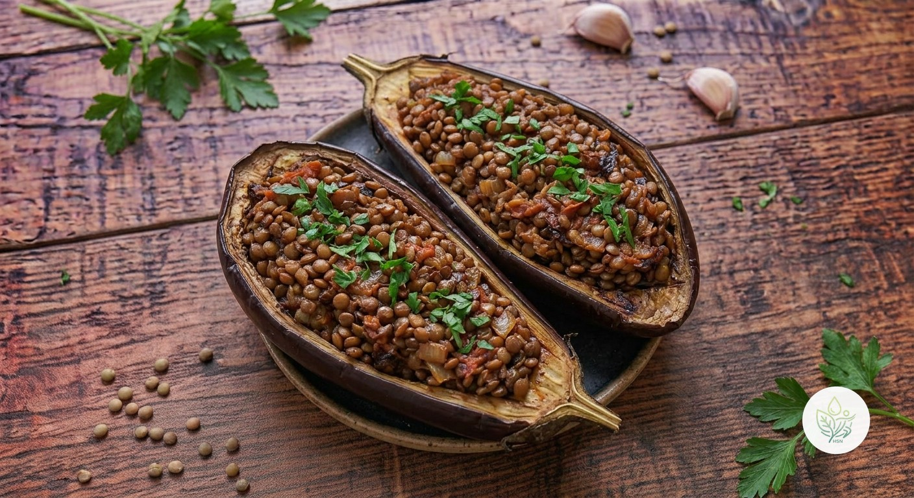

Berenjenas Rellenas de Lentejas
ABerenjenas asadas rellenas de un guiso de lentejas con tomate, comino y pimentón: un plato de cuchara servido al horno. Vegano, con casi 20 g de proteína y 18 g de fibra por ración.
Une una verdura muy ligera con una legumbre: casi 20 g de proteína vegetal y 18 g de fibra por ración, con solo 12 g de grasa (1,8 g saturada) y prácticamente nada de sodio. Las berenjenas se hornean en lugar de freírse, porque al freír absorben mucho aceite y multiplican sus calorías; el comino, el pimentón y el ajo dan el sabor sin necesidad de sal. Las lentejas aportan además hierro y folato.
Ingredientes (toca el nombre para ver su ficha)
- 🍆 Berenjena 600 g
- 🫘 Lentejas 120 g
- 🍅 Tomate 200 g
- 🧅 Cebolla 120 g
- 🧄 Ajo 6 g
- 🫒 AOVE (aceite de oliva virgen extra) 20 g
- 🌶️ Pimentón 3 g
- 🌿 Comino 2 g
Elaboración
- Cuece las lentejas (unos 120 g en seco) en agua sin sal durante 20-25 minutos, hasta que estén tiernas, y escúrrelas.
- Precalienta el horno a 200 °C. Abre las berenjenas por la mitad a lo largo, marca la pulpa con cortes en rombo, píntalas con la mitad del AOVE y hornéalas 25-30 minutos con la pulpa hacia arriba.
- Mientras tanto, sofríe la cebolla y el ajo picados en el resto del AOVE durante 5 minutos; añade el tomate rallado, el pimentón y el comino, y cocina 8 minutos más.
- Incorpora las lentejas al sofrito y mezcla.
- Vacía con una cuchara parte de la pulpa de las berenjenas (deja un borde de 1 cm), pícala y mézclala con el relleno.
- Rellena las mitades, gratina 8-10 minutos y sirve.
Información nutricional (receta completa, 2 raciones)
De las grasas, 3.5 g son saturadas · de los carbohidratos, 34.1 g son azúcares · sodio: 33.2 mg
Información nutricional (por ración)
De las grasas, 1.8 g son saturadas · de los carbohidratos, 17.1 g son azúcares · sodio: 16.6 mg
Preguntas frecuentes
¿Cuántas calorías tiene la receta de Berenjenas Rellenas de Lentejas?
Toda la receta de Berenjenas Rellenas de Lentejas tiene 858.1 kcal repartidas en 2 raciones, es decir, unas 429.1 kcal por ración.
¿Puedo usar lentejas de bote?
Sí: unos 300 g de lentejas ya cocidas, escurridas y enjuagadas, y te ahorras el primer paso.
¿Se pueden congelar?
Sí, ya rellenas y antes de gratinar, hasta 2 meses. Descongélalas en la nevera y gratínalas directamente.
¿Es necesario freír la berenjena?
No, y es mejor no hacerlo: al horno queda tierna y jugosa sin absorber el aceite que se llevaría al freírla.